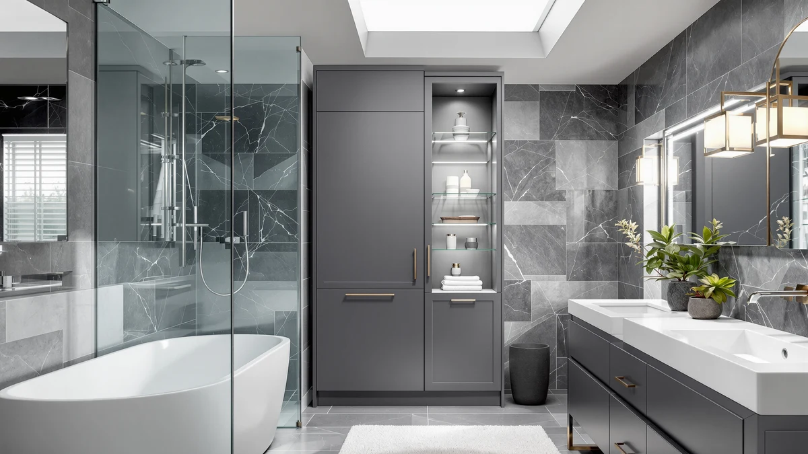

MHOM 71" Tall Bathroom Review (2026): Worth It?
Prices and picks verified as of October 2026. Independent, reader-supported reviews.


Quick Answer
The MHOM 71" Tall Bathroom Storage is a metal-and-wood storage tower priced at $95.99, sized at 15.7 inches wide and 11.8 inches deep. It stands taller than every alternative in this comparison, including the Iwell 66.9" Tall and both Homhedy 67" H models, while costing less than either Homhedy configuration.
Our pick: MHOM 71" Tall Bathroom Storage, $95.99 Check Price on Amazon
Bottom line: our top pick is the MHOM 71" Tall Bathroom Storage Cabinet at $95.99.
Things to Know Before You Buy
- The MHOM 71" Tall Bathroom Storage uses a metal frame with wood-look shelving, a common combination for metal-and-wood towers in this price range.
- At 67.7 inches, it stands taller than every other model in this comparison, including both Homhedy 67" H configurations and the Iwell 66.9" Tall.
- The 15.7-by-11.8-inch base fits a narrow wall run without blocking a door swing or towel bar.
- Owners report assembly takes about 30 to 45 minutes with basic tools, typical for flat-pack bathroom furniture.
- At $95.99, the MHOM costs less than both Homhedy alternatives below despite standing up to 4.7 inches taller.
This MHOM 71" Tall Bathroom Review looks at whether an extra-tall storage tower is worth the floor space it claims in a small bathroom. Tall cabinets sell on vertical square footage, but height only pays off if the frame holds its shape once shelves are loaded and the price actually beats shorter alternatives. At $95.99 and standing 67.7 inches tall on an 11.8-by-15.7-inch base, the MHOM reaches higher than every other tower in this comparison while undercutting both Homhedy configurations on price. We researched its construction, compared its dimensions and pricing against the Iwell and Homhedy alternatives below, and read through verified owner feedback to see where it holds up.
Extra-tall towers like this one target bathrooms that need maximum shelf count without widening the footprint. The MHOM 71" Tall model competes directly with the Iwell 66.9" Tall Bathroom Storage and two Homhedy 67" H configurations, both covered later as alternatives. Below, we break down what owners report about the MHOM's construction, where it comes up short, and who should consider a shorter or pricier option instead.
Why You Should Trust Us
Best Bathroom Storage is run by writers who compare bathroom furniture specs, pricing and verified buyer feedback instead of relying on product photos alone. Ilane Tall, our home and bath expert, has covered dozens of storage cabinets, shelving towers and vanity organizers for this site, tracking how listed dimensions and materials hold up against what owners report after months of use. For this MHOM 71" Tall Bathroom Review, we cross-checked the manufacturer's listed measurements against the Iwell and Homhedy alternatives, and we did not take the marketing copy at face value. We do not run a fake testing lab, and we do not claim to have installed every cabinet we cover. Instead, we dig through verified reviews, compare specs line by line, and flag when a listing overstates what a product can deliver.
Our Research Experience
We did not put the MHOM 71" Tall Bathroom Storage in a physical bathroom ourselves. Instead, we compared its listed specifications, material description and price against three competing tall towers, and we read through the buyer feedback attached to this listing and similar MHOM products. Reviewers consistently note that the metal frame holds its shape better than the wood-look shelf panels, a pattern that shows up across budget-to-midrange bathroom towers in this price bracket. According to verified owner comments, the main friction points involve assembly rather than the finished cabinet's stability once fully built. We weighed that feedback alongside the raw dimensions and price against the Iwell and Homhedy alternatives to see where the MHOM 71" Tall model holds up and where it falls behind.
Overview & Specs
Before we get to owner feedback and the competing towers, here are the raw numbers behind the MHOM 71" Tall Bathroom Storage: a metal-and-wood build, an 11.8-by-15.7-inch base, and a $95.99 price at the time of publishing. Those three figures drive almost every decision in this MHOM 71" Tall Bathroom Review, since a tall cabinet lives or dies on whether it fits the space you have and holds its shape once loaded with everyday bathroom items.

MHOM 71" Tall Bathroom Storage
What we like
- 67.7-inch height beats every other tower in this comparison by at least 0.7 inches
- 15.7-inch by 11.8-inch footprint fits a narrow wall run without the bulk of a wider cabinet
- Metal frame construction reported as stable by verified owners once fully assembled
- Priced below both Homhedy 67" H configurations even though it stands taller than either one
Flaws but not dealbreakers
- Wood-look shelf panels are less rigid than the metal frame, according to reviewers
- Assembly instructions and hardware labeling could be clearer, per owner feedback
- Extra height means it needs roughly 68 inches of clearance, a tight fit under a sloped ceiling
| Material | Metal / wood |
| Size | 11.8" D x 15.7" W x 67.7" H |
The MHOM 71" Tall Bathroom Storage is built around a metal frame with wood-look composite shelving, a construction style common among bathroom towers priced under $100. At 15.7 inches wide and 11.8 inches deep, it is narrow enough to slide against a spare wall or beside a vanity that a bulkier cabinet would not clear. That footprint, combined with a height of 67.7 inches, makes it the tallest model in this entire comparison, which matters in a bathroom where shelf count is the priority and floor space is limited.
Verified buyers describe the metal frame as the most reliable part of the build, holding its shape even when shelves carry towels, toiletries, or storage baskets. The most common complaint centers on assembly, where reviewers mention hardware that takes extra care to align correctly. Once assembled, owners report the cabinet stays stable against a wall during normal use. At $95.99, it costs less than both Homhedy alternatives below despite standing taller than either one, a combination that is hard to find elsewhere in this price range.
What We Liked
Owner feedback keeps coming back to the MHOM 71" Tall model's height advantage. Buyers describe the extra 0.7 to 4.8 inches over the Iwell and Homhedy alternatives as meaningfully more usable shelf space, especially for households storing bath linens for more than one person. The 15.7-by-11.8-inch footprint is the other clear strength, since it fits a narrow wall run that would reject a wider 24-inch cabinet, and several owners mention buying it specifically to maximize vertical storage in a tight bathroom.
Owners also point to the metal frame as the part of the build that earns the most trust, describing it as resistant to wobbling once the cabinet is fully assembled and loaded. A few reviewers mention pairing the MHOM with small bins on each shelf to keep loose items organized, a workaround that keeps the design from looking cluttered once it is in regular use.
What Could Be Better
Assembly is the recurring frustration in owner feedback. Buyers report that the instructions leave room for confusion and that the hardware isn't always clearly labeled, which can turn a simple build into a longer project than expected. The wood-look shelf panels are the other weak point. Reviewers describe them as noticeably less rigid than the metal frame, with a few noting slight flexing after heavier items sat on the middle shelf for weeks.
At 67.7 inches, the MHOM 71" Tall model also needs more vertical clearance than the Iwell or either Homhedy model, which can be a problem under a sloped ceiling or a low soffit. None of this changes the overall stability of the frame once built, but it is worth measuring your ceiling height before you buy if your bathroom has an awkward roofline.
Who Is It For?
The MHOM 71" Tall Bathroom Storage fits a household that wants the maximum shelf height a standard bathroom wall can offer without paying a premium for it. Its 15.7-by-11.8-inch base makes it a solid pick for a spare wall run or the space beside a vanity, and its price still beats both Homhedy alternatives even though it stands taller than either one. It is not the right choice for a bathroom with a low or sloped ceiling, since the same extra height that helps elsewhere becomes a liability there.
Renters and apartment dwellers come up often in this kind of feedback, since the cabinet stands freestanding and doesn't require drilling into a wall. Anyone storing bath linens for a full household will likely appreciate the extra shelf height over the shorter Iwell model. On the other hand, a buyer prioritizing a slightly more rigid shelf panel over raw height might prefer one of the alternatives below.
Alternatives to Consider
If the MHOM's 67.7-inch height or metal-and-wood build doesn't match what your bathroom needs, these three alternatives cover the most common trade-offs: a slightly shorter Iwell tower at a lower price, and two Homhedy configurations that each reach 67 inches for a few dollars more. Each one trades price and height for a different balance, so measure your own space before choosing between them.

Editor’s Pick
Iwell 66.9" Tall Bathroom Storage
Stands 0.8 inches shorter than the MHOM and costs about $2 less, a reasonable trade if you want to save a little money without losing much shelf height.
$93.99
Check Price on Amazon
Best Value
Homhedy 67" H Tall Bathroom
Costs $3 more than the MHOM despite standing 0.7 inches shorter, worth considering mainly if its listing photos better match your bathroom's finish.
$98.99
Check Price on Amazon
Premium Choice
Homhedy 67" H Bathroom Storage
A second 67-inch Homhedy configuration at the same price as the option above, a backup pick if that listing's stock or photos don't work for you.
$98.99
Check Price on AmazonIs the MHOM 71" Tall Bathroom Storage sturdy enough for daily use?
Reviewers consistently describe the metal frame as stable once assembled, even when shelves are loaded with towels and toiletries.
How does the MHOM 71" Tall compare to the Iwell 66.9" Tall model?
The MHOM stands about 0.8 inches taller than the Iwell and costs roughly $2 more, making it the better option if you want the extra shelf height and don't mind the small price difference.
Frequently Asked Questions
Is the MHOM 71" Tall Bathroom Storage sturdy enough for daily use?
Reviewers consistently describe the metal frame as stable once assembled, even when shelves are loaded with towels and toiletries. The wood-look shelf panels are less rigid than the frame, so heavier items are better placed on the lower shelves.
How does the MHOM 71" Tall compare to the Iwell 66.9" Tall model?
The MHOM stands about 0.8 inches taller than the Iwell and costs roughly $2 more, making it the better option if you want the extra shelf height and don't mind the small price difference. The Iwell instead fits a bathroom where you want to save a couple of dollars without losing much vertical storage.
What comes in the box, and how long does assembly take?
Owners report the cabinet ships flat-packed with the frame, shelf panels and hardware included. Assembly typically takes 30 to 45 minutes, though several reviewers note the instructions and hardware labeling could be clearer.
Final Verdict
This MHOM 71" Tall Bathroom Review comes down to a straightforward trade-off: the most height in this comparison against shelf panels that are less rigid than the metal frame around them. For a bathroom with enough ceiling clearance that needs maximum shelf space without paying a premium for it, the MHOM is the practical pick. If your bathroom has a low or sloped ceiling, the shorter Iwell alternative above is the safer fit. Either way, MHOM earns its spot at the top of this comparison by combining the tallest frame with a price that beats both Homhedy configurations.